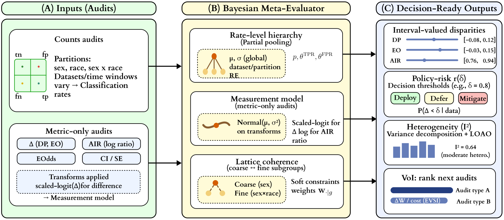
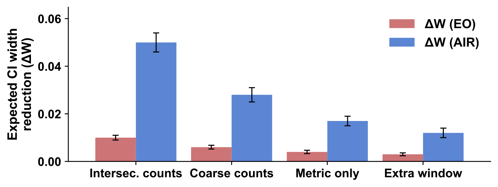
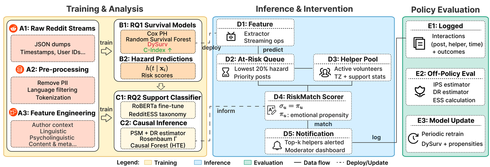
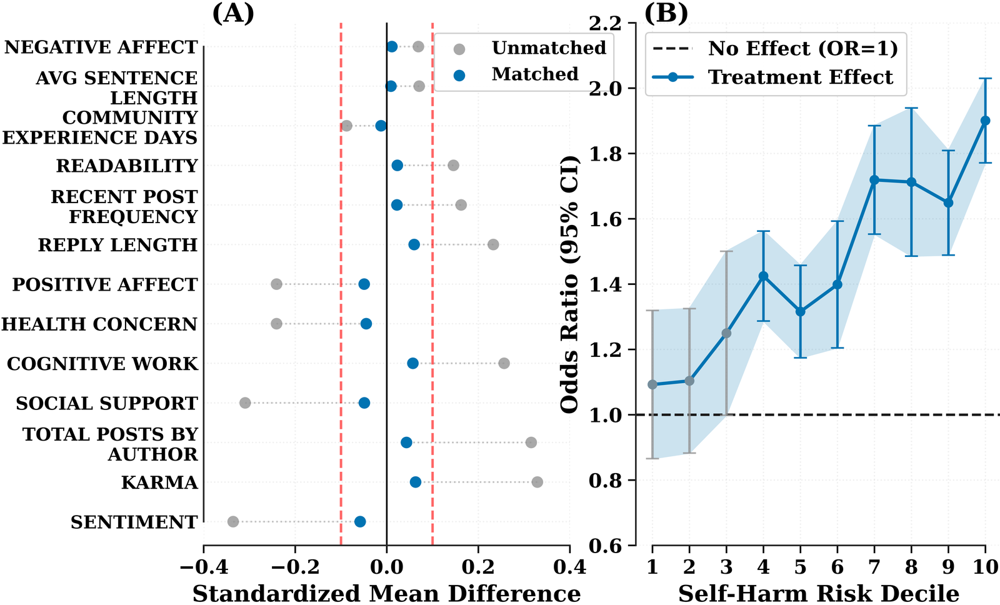

Paper Detail
论文详解 · 方向四
14 May 2026
Direction IV
Trustworthy AI · Affective Computing
方向四 · 代表性论文


Paper 07 / Direction IV
公平性元评估
Audit-of-Audits for the Web: A Bayesian Meta-Evaluation Framework
★
Fan, G.
·
WWW 2026
CCF-A
Problem
问题
Web 平台的
公平性声明
本身可信吗?
Method
方法
Audit-of-Audits — 分布式贝叶斯后验估计
Finding
发现
主流平台公平性声明存在
系统性高估


Paper 08 / Direction IV
心理健康社区
Mind the Gap: Predicting, Explaining and Reducing Time-to-First-Comment
★
Fan, G.
·
AAAI 2026
CCF-A
Problem
问题
在线心理健康社区为何
无人回应
的 reply gap?
Method
方法
可解释预测模型 + 干预策略仿真
Finding
发现
关键支持时机可被
预测和缩短
樊光瑞
· gerryfan0706.github.io
14
/ 17